Kiko, le bébé chameau du désert, ne parle qu'anglais ! Avec lui, Amine écoute, répète et joue : 20 leçons en deux saisons, un dessin animé à chaque fois, et rien à lire.
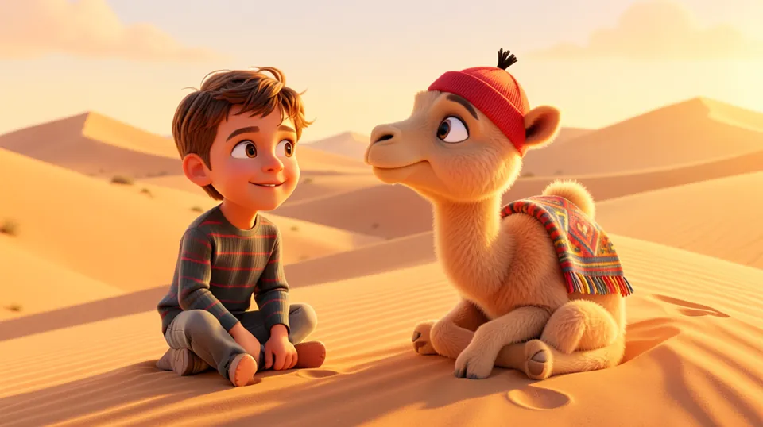
1👋 Hello, Kiko!Dire bonjour et au revoir, dire son prénom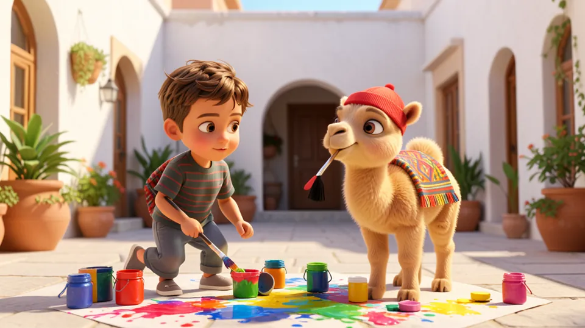
2🌈 ColoursLes couleurs : red, blue, yellow, green…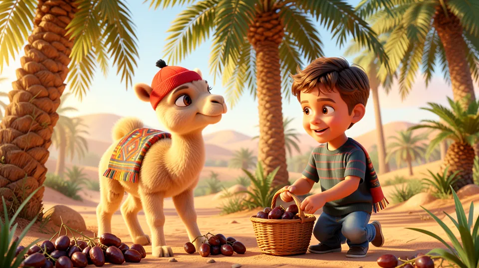
3🖐️ One, two, three!Compter de 1 à 5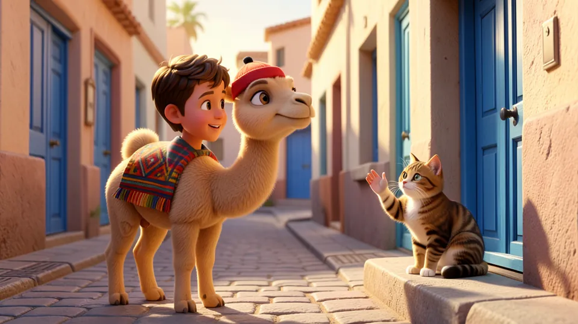
4🐱 AnimalsLes animaux : cat, dog, bird, fish…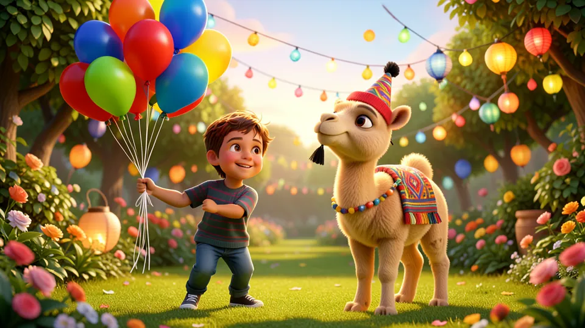
5🔟 Six, seven… ten!Compter de 6 à 10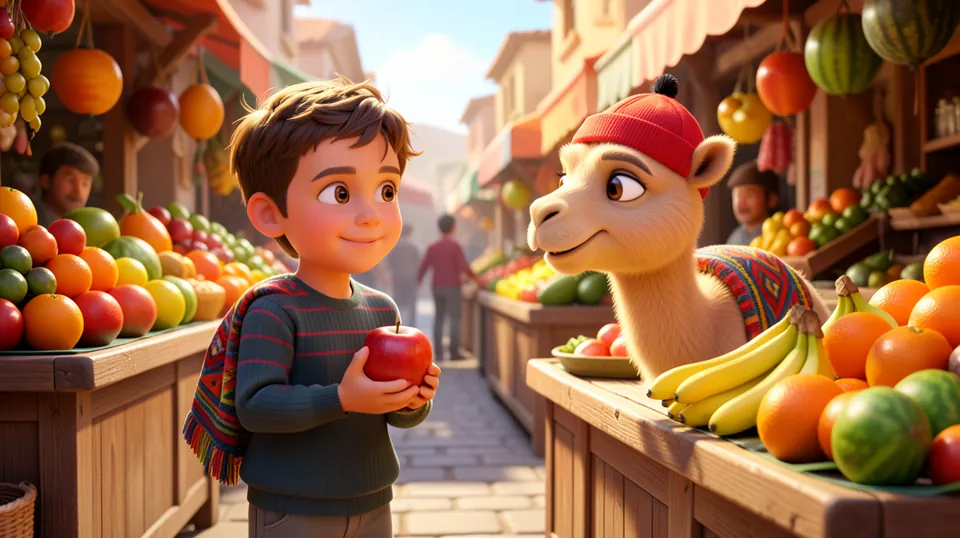
6🍎 Yummy fruitLes fruits, I like…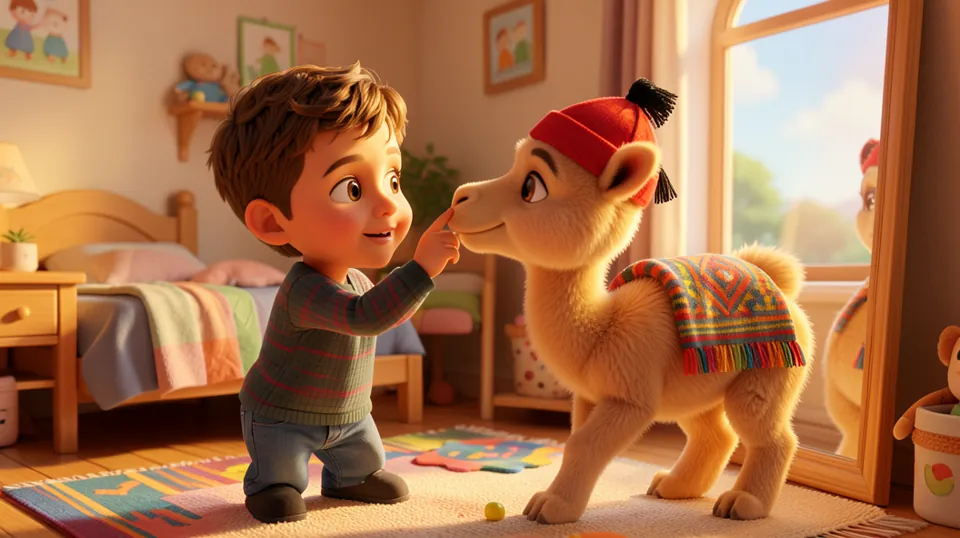
7👃 Touch your nose!Le corps : head, eyes, nose, mouth…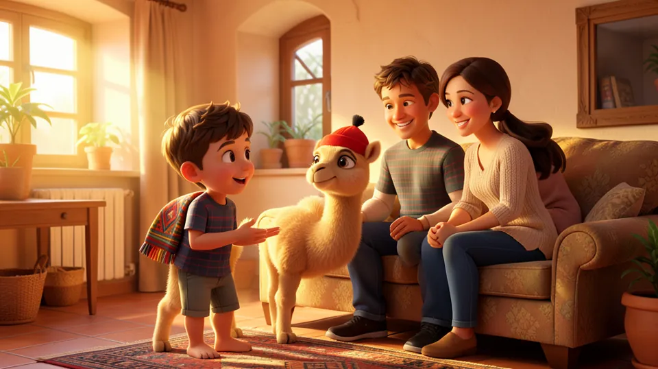
8👨👩👦 My familyLa famille : mummy, daddy, brother, sister…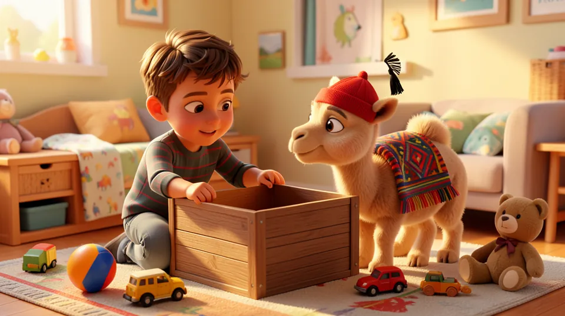
9🧸 My toysLes jouets, big et small (grand, petit)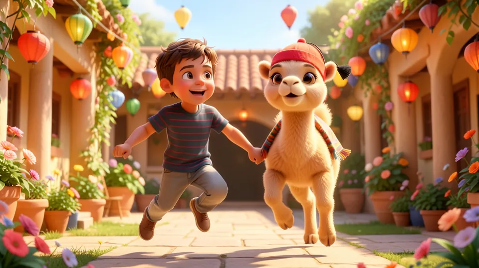
10🎉 Jump, Kiko!Bouger : jump, run, clap, dance… et la grande fête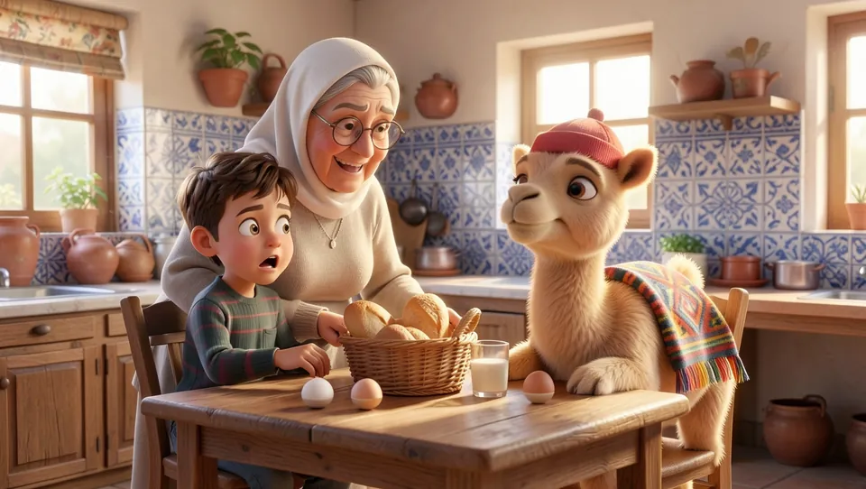
11🍞 I'm hungry!Manger et boire : bread, milk, water, egg…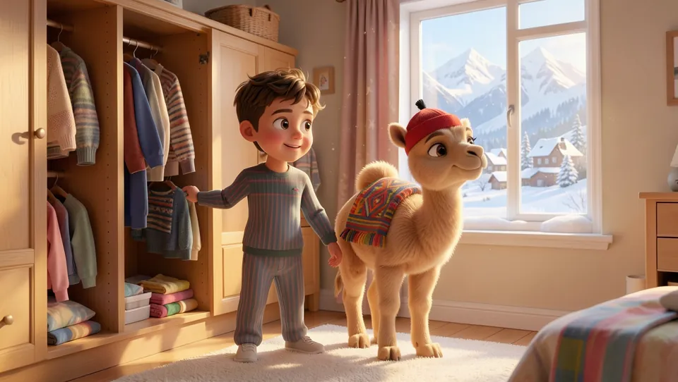
12👕 Get dressed!Les vêtements : hat, shoes, socks, coat… 13☀️ Sunny or rainy?Le temps qu'il fait : sun, rain, wind, cloud…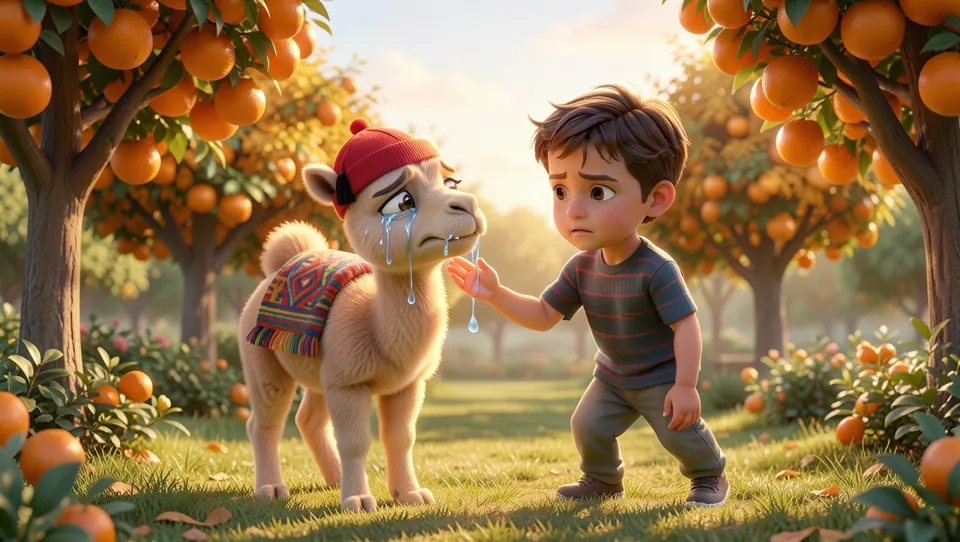
14😊 Happy KikoLes émotions : happy, sad, angry, scared…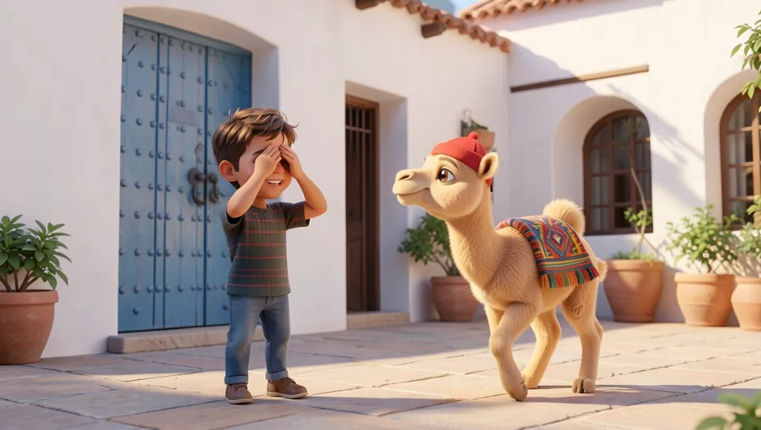
15🏠 My houseLa maison : door, window, bed, chair…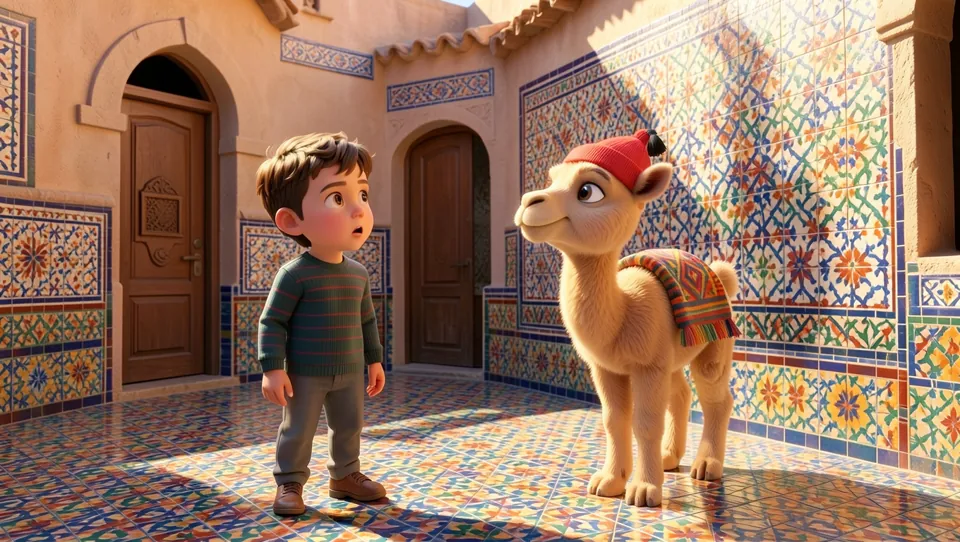
16🔺 ShapesLes formes : circle, square, triangle, star…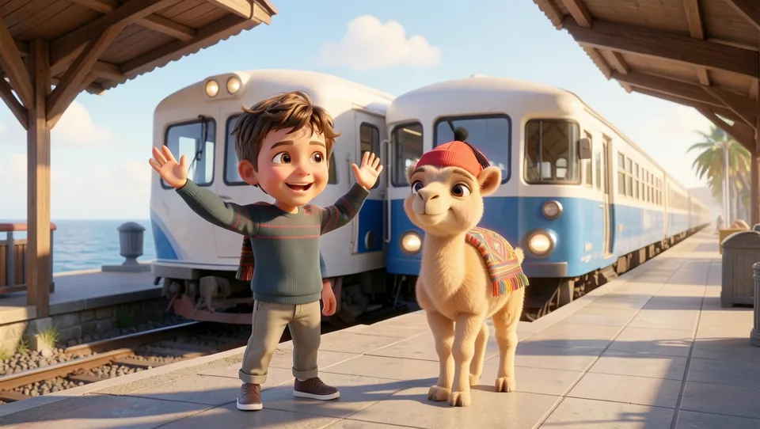
17🚌 Beep beep!Les transports : car, bus, train, boat, plane…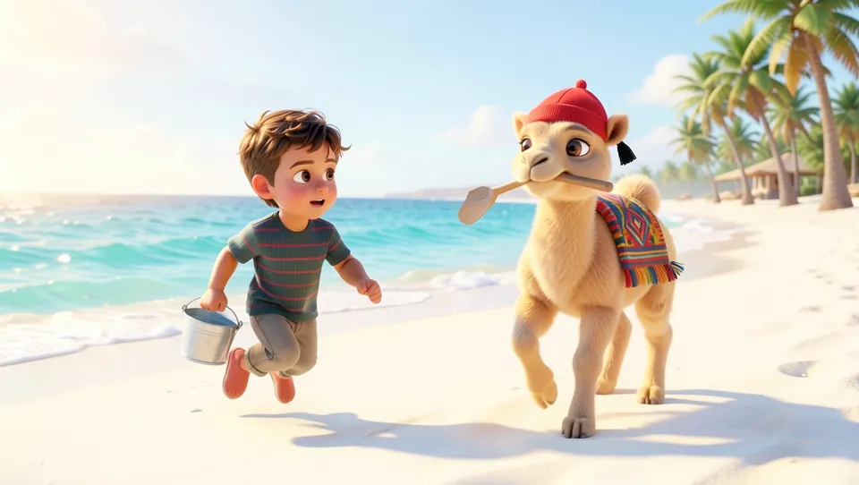
18🏖️ At the beachLa plage : sea, sand, shell, crab…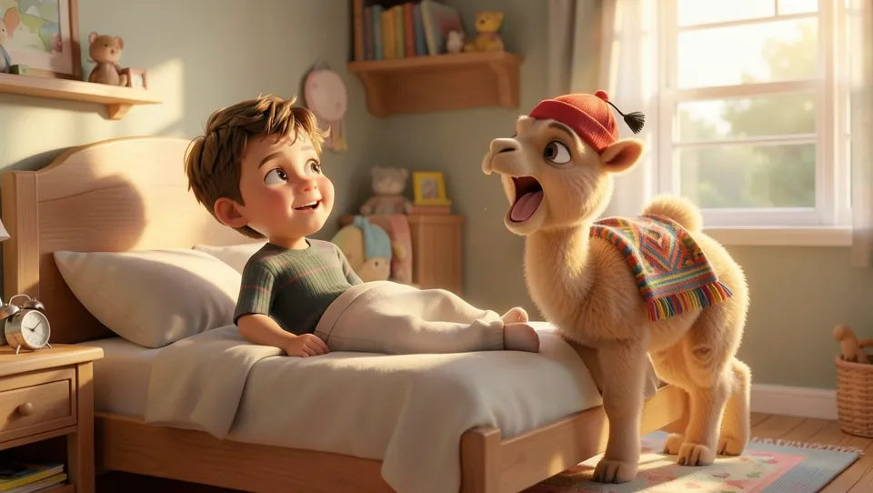
19🪥 Good morning!Ma journée : wake up, wash, brush, eat, sleep…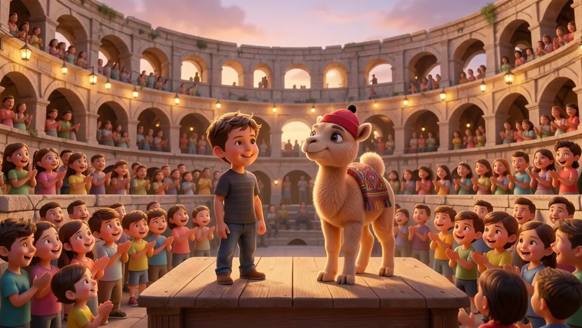
20🎪 The big showLe grand spectacle : on revoit tout !